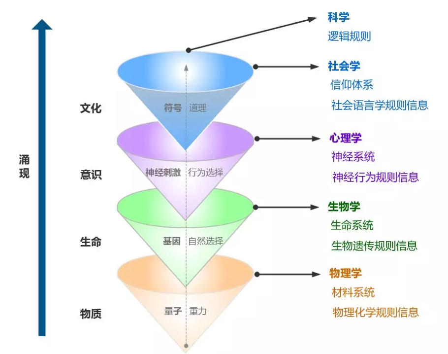

Roy-学习-哲学-个人感悟
人类所有行为最根本的追求是永恒
最高级的永恒：时间空间上每个点的最优化
其次的永恒：做不到随时随地最优化，就选择某时某地的最优化。于是，产生了不同的选择，即不用的价值观
将人类个体作为一个研究的对象，里面包含三部分，身体，灵魂，理智（《沉思录的notation》）；或者生理，感性，理性；或者马斯洛需求：生理需求，安全需求，社会需求，尊重需求，自我实现
身体、灵魂、理智；感觉属于身体；爱好属于灵魂；原则属于理智
各种学术都在提出模型来拟合现实，然后根据模型去验证现实，或者根据模型预测现实还没出现的情况，或者通过仿真找出最优结果；（等同）《生产系统建模与Simio仿真》中“系统建模目的：分析和设计实际系统、预测或预报实际系统的某些状态的未来发展趋势、对系统实行最优控制”
各种学术模型：
- 学术模型之一：哲学，人机交互的认知模型：研究对象，输入，输出，对象本身的信息处理，reasoning，找规律的过程（参考：CS 7637 KBAI, CS 6750 HCI, 《Knowledge Systems》Mark Stefik）
- 学术模型之一：系统仿真，建模：系统定义，建立数学模型，模型变换，设计仿真实验，模型加载，仿真实验，模型校验，提交仿真报告
- 学术模型之一：工科解方程
- 确定描述状态的各变量，也是要算出其时间空间分布的未知量
- 确定研究区域
- 从守恒出发，用微元模型找出未知量和已知参数之间的关系，及governing equation
- 确定边界条件
- 求解：精确解或者数值解
- 得出各未知量的时间空间分布
- 推出相关的可测量或者我们想看到的变量的时间空间分布
- 做多组试验：全排列组合，或者通过试验设计原则组合
- 由点到线去归纳总结规律，或者由点到虚线去溯因提出新假说
- 做最优化设计
- 上述步骤，映射到传热学
- 速度场，温度场
- 一个房间
- 质量守恒，N-S方程，能量守恒
- 房间边缘和外界的关系，例如，恒定热量传递，或者恒定温度，或者强制对流；同时，有没有内热源
- 规则形状精确解，分离变量法；不规则形状有限元有限差分有限体积法
- 温度，速度空间时间分布
- 房间内热流分布，各位置分速大小
- 不同的边界条件，内热源加热方式，算出热流分布
- 某一类边界条件，得到某一种热流分布特征
- 根据目的，（例如让房间每时每刻，每个位置保持同样温度），设计出最优的内热源位置
- 上述步骤，映射到电磁学
- 电场，磁场
- 纳米颗粒
- 麦克斯韦4个方程
- 电场连续
- 规则形状（例如球形颗粒）分离变量法，Mie Theory；不规则（例如球形颗粒加基底），有限差分，FDTD
- 电场磁场分布
- 能量分布，吸收能量分布，散射能量分布
- 不同尺寸，不同材料，能量吸收分布，散射方向
- 某一类材料和尺寸比例，能量吸收大小
- 根据目的，（例如让能量都被吸收，或者能量都被反射回去，或者完全没有能量反射即隐身），设计出最优的结构
- 上述步骤，还可以映射到：流体力学（机翼设计），材料力学（桥梁结构），电化学（锂电池），量子力学（各向异性材料），运动学（汽车轮胎减震），固态物理
- 学术模型之一：系统仿真，AE 502, 例如，一辆车有不同部件，电机，内燃机，传动系统，液压系统。每个部分可以用上述模型单独研究，然后统一用effort，flow，power，energy逐个连接，就可以对整个系统进行模拟，（工具，例如simulink）。最终，得出整车的模型，算出整车油耗，然后不同的参数，仿真，得出最优配置
这些模型，大概是同一类方法，可以抽象出来
另一类模型：数据的回归分析，或者统计学的找大概率发生的规律；本质上是由点到虚线，逻辑上不是完全严密的，但是在没办法找到精确机理的时候，这种方法是首选；例如，管理学，社会学，经济学；理工科也有，例如，热力统计学，量子力学，人工智能里的Q Learning
建立governing equation方法：
- 研究机理，比如，科研中各种现象背后的物理原因的解释
- 系统仿真，比如，经济学中从A到D的回归分析，不用管中间的B和C
未来，研究机理的方法，慢慢应用于上述社会科学；初始尝试的，量化交易，kpi，信用评级
三观：包括世界观、人生观、价值观
- 世界观：遵循自然规律。自然界有一套通用的规律，科学艺术迷信都是在尝试解释这套规律；这个通用的规律又可以映射到不同的领域中：人、事、物、钱、信息、信用
- 哲学（通用）
- 西方哲学
- 周易384爻的道理
- 数学
- 逻辑学
- 物理（物）
- 理论力学，材料力学，电动力学，量子物理，固态物理，流体力学，传热学，电化学
- 经济学（钱）
- 宏观、微观、管理经济学
- 组织行为学（人）
- 心理学、社会学、企业文化
- 人生观：人生目的，人生态度，人生价值
- 人、群体（家庭）、组织（公司，国家）就是一个资源转换器，有各种资源（人力，财力，信息）的输入和输出，不同的人有不同的转换效率，学习各种知识为了提高转换效率，这是人客观的一面
- 人不同于物，又有主观感觉：马斯洛需求
- 第一层次：生理上的需要 - 呼吸 水 食物 睡眠 生理平衡 分泌 性
- 第二层次：安全上的需要 - 人身安全 健康保障 资源所有性 财产所有性 道德保障 工作职位保障 家庭安全
- 第三层次：情感和归属的需要 - 友情 爱情 性亲密
- 第四层次：尊重的需要 - 自我尊重 信心 成就 对他人尊重 被他人尊重
- 第五层次：自我实现的需要 - 道德 创造力 自觉性 问题解决能力 公正度 接受现实能力
- 每个需要都可以试着去量化，但并不是高于一个阈值就会满足；就像各种传感器，感受的其实是差值，可以是时间上的差值（相对自身以前），或者是空间上的差值（相对别人）
- 共赢：及人类利益总和最大化
- 所以，人生观应该是不断地满足系统（个人或者集体）各类需求，即持续提升各方面的水平
- 但是个人和集体的利益优先顺序？价值观
- 价值观：是一种处理事情判断对错、做选择时取舍的标准。
- 从类别的维度：对上述人、事、物、钱、信息、信用的价值排序，可以参照马斯洛需求来定
- 从范围的维度：个体，群体，集体价值的排序
鱼的记忆只有几秒，人一次大概只能记住7个数字，这是生物个体的局限性
类比于电脑，人的短期记忆就类似于缓存
类比于电路，人的短期记忆就类似于电容
人的感受是与自己有限的客观视野内的事物的交互，所以想要幸福就要想办法要让好的感觉长期保存，比如用各种工具媒介记录，而不好的感觉随着人的记忆消失而消失
人的烦恼大多数来自于自身的主观感受的规律与外界的客观世界的规律相矛盾。这个矛盾是与生俱来的。愚蠢的想法是认可“人在得不到的时候拼命追求，得到后又不珍惜”。愚蠢的做法是刻意要求自己通过自律去适应外界。聪明的想法是不去勉强自己。聪明的做法是巧妙利用人的各方面感觉的局限性避开这个矛盾。
例子1，“再好的美食吃久了都会腻”，这个矛盾是因为外界呈现给个人随手可得的食物选择就少数几种，而人的味觉有个固定的“记忆量”。假设这个记忆量是对于个体是个固定的数字。那客观规律是，如果摆在你面前的美食选择达不到这个数量，就会有腻的感觉。但是如果选择超出这个数量，可以通过轮换达到一直保持新鲜感。但这其中存在一个问题，长期动态平衡下来的随时能得到的不需要添加努力进取的选择，往往少于个人客观的记忆数量。想要达到更多的食物选择，需要主动去实现，而不是被动的或者说本来就“摆在眼前的”。换句话说，就是想要实现多于味觉的选择，需要额外去添加努力。而每次添加的努力都是一样多。从长期来看，每次都添加很多的努力是低效率的，或者说是不现实的。所以聪明的做法是“磨刀不误砍柴工”，或者说“一劳永逸”，最开始的时候画时间研究，得出最优解并固定成流程。相当于一次性的降低了资源的熵，从而节省了以后每次使用时固定要付出的一部分努力。比如，通过多次尝试找出最优的做菜方式并流程化，以后每次都“照单抓药”，节省每次的时间和精力，但同时能保持生活的品质。或者给自己设计一份外卖菜单，并做成App，每次只需要看看菜单，然后一键下单，省略中间的部分。总之，通过初始努力，永久降低周围资源的熵，从而在同样的努力下，长期得到更低熵的资源
例子2，学习，工作，生活，娱乐，需要平衡。感觉生活没意思是因为可供自己选择的兴趣不够多。根据上面的道理，应该将生活各元素“游戏化”，而且通过“猴子掰玉米”的方式，轮换着去做，消除主管客观的矛盾。最理想的状态是，一直能专心做某件事，而通过轮换一直对这些事情保持新鲜感
例子3，很多人出轨，原因是自己的另一半只有一种，或者少数人设。这是由于传统的道德观念造成的，“人就应该坚持一种原则”“表里如一”。但是，感情方面的感受可能也有“记忆量”。当另一半的“角色”或者“人设”少于这个量，就会七年之痒。这是主观感受的规律。而客观世界，尤其现代，一夫一妻制，每个人又有“表里如一”的道德束缚。所以和主观规律产生矛盾，造成烦恼。这个道理对应的现象，比如韦小宝可能不会出轨。还有娱乐圈的各种出轨，有明星自身的不够自律，也有客观环境每天对他们的人性的考验。所以，感情需要经营，实际是人本身没有多重人设，需要自己努力去尝试，找出对方在各种情境下喜欢的自己的人设
知识结构

人脑像一张网，把每天感受到的事物串起来，没有及时处理的又有印象的东西，就会出现在梦里，所以会有各种奇怪的梦
【未完成】生产系统建模与simio仿真的剩余笔记整理